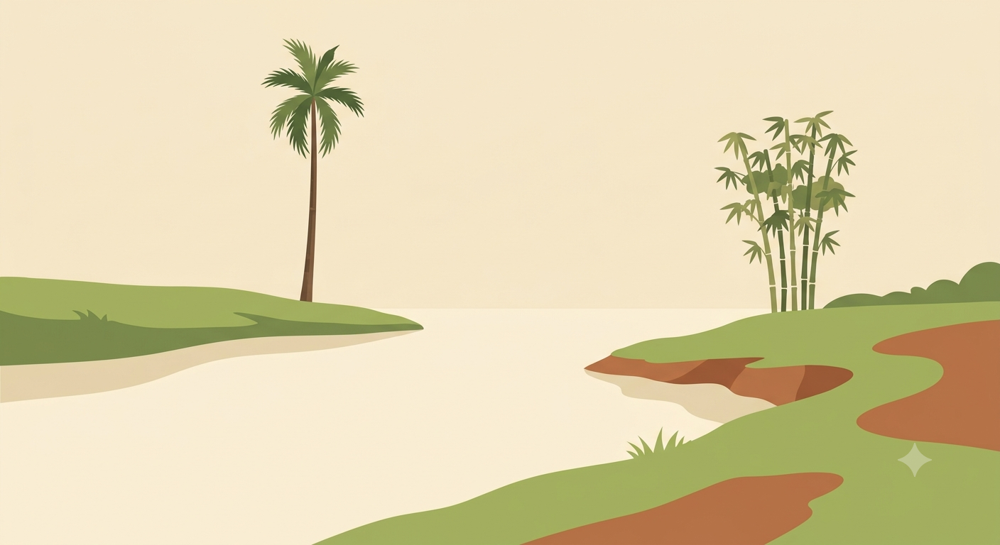
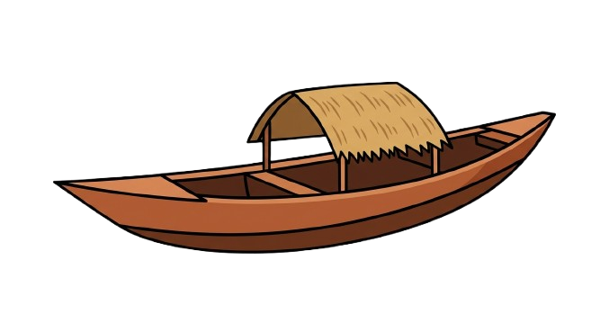
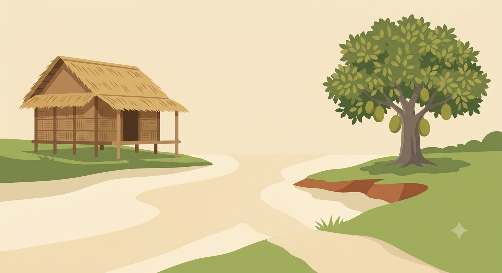
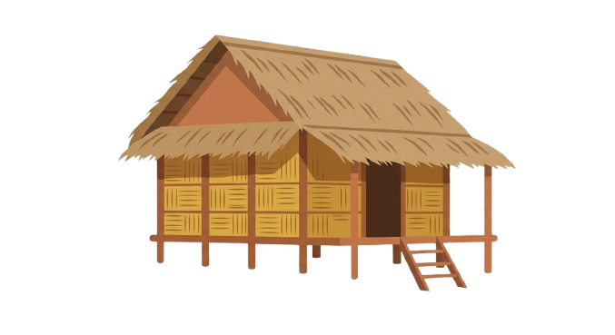
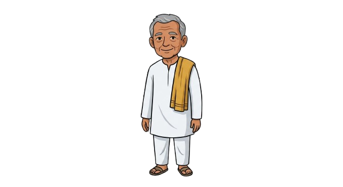

আহক, আমি এটা সৰু ধুনীয়া খেয়ালী খেলিম


তামোল গছজোপাৰ ওচৰত আমাৰ নাওখন কোনফালে ঘূৰিছিল?



চাং ঘৰখনৰ ওচৰত আলিখন কোনফালে ঘূৰিছিল?
আজি আমাৰ লগত খেলি বৰ ভাল লাগিল!
কʼত গʼল?
আহক, আমি এটা সৰু ধুনীয়া খেয়ালী খেলিম


তামোল গছজোপাৰ ওচৰত আমাৰ নাওখন কোনফালে ঘূৰিছিল?



চাং ঘৰখনৰ ওচৰত আলিখন কোনফালে ঘূৰিছিল?
আজি আমাৰ লগত খেলি বৰ ভাল লাগিল!